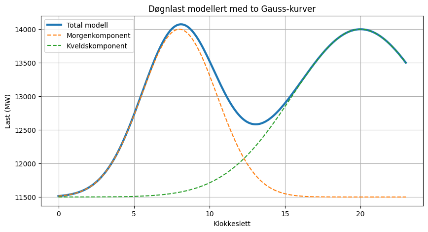
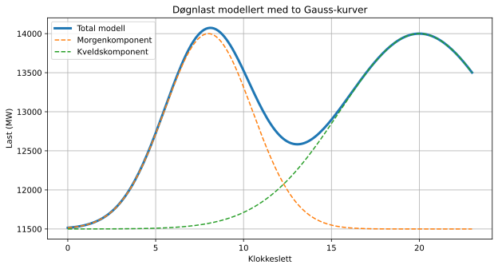
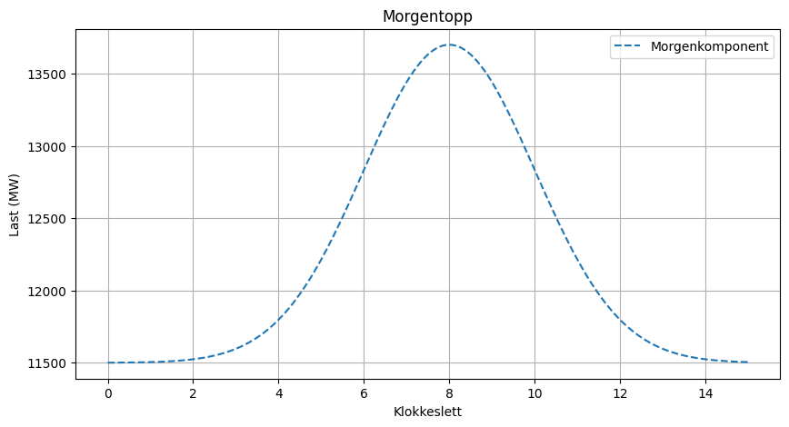
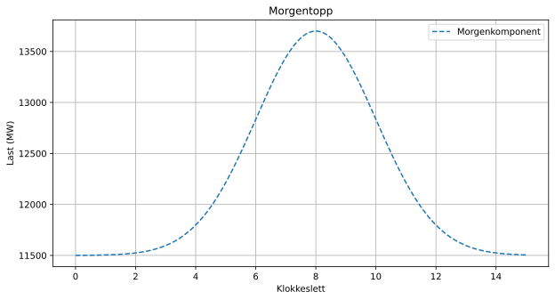
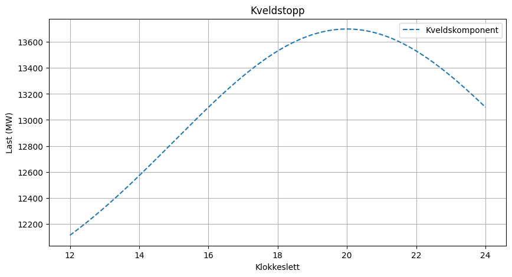
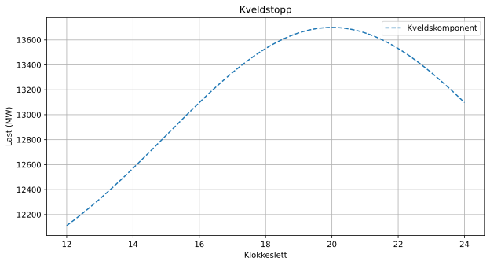
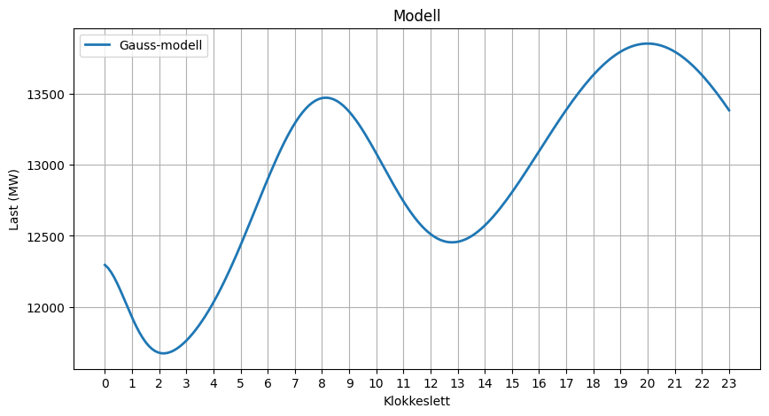
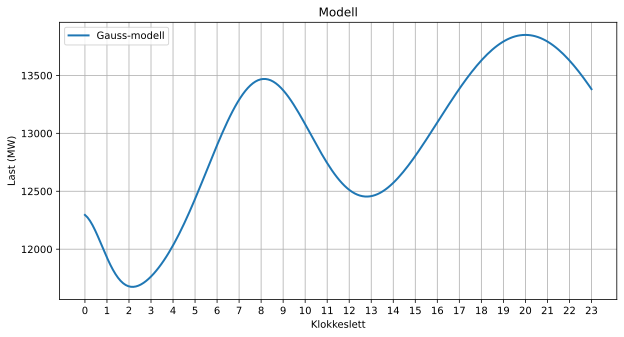

Modell treffsikkerhet#
Hvor trefsikker er modellen. I dette kapitteletskal vi gå litt videre med modellering av data og anslå hvor godt modellen treffer
Bias og varians#
Bias og varians er to sentrale begreper innen statistisk modellering og maskinlæring. De beskriver to ulike typer feil som kan oppstå når vi bruker en modell til å beskrive eller predikere data, som vist i Fig. 21.

Bias#
Bias er den systematiske feilen i modellen.
En modell med høy bias er ofte for enkel og klarer ikke å beskrive de viktigste mønstrene i dataene. Modellen gjør de samme feilene om og om igjen.
Høy bias fører ofte til:
undertilpasning (underfitting),
dårlig ytelse på både treningsdata og testdata,
systematiske avvik mellom modell og virkelighet.
Eksempel:
Hvis vi modellerer døgnlasten med kun én sinuskurve,
vil modellen ofte være for enkel til å beskrive både morgen- og kveldstoppen i de observerte dataene. Modellen har da høy bias.
Varians#
Varians beskriver hvor følsom modellen er for endringer i datasettet.
En modell med høy varians tilpasser seg treningsdataene svært godt, men reagerer kraftig på små endringer i dataene.
Høy varians fører ofte til:
overtilpasning (overfitting),
svært god ytelse på treningsdata,
dårlig generalisering til nye data.
Eksempel:
Hvis vi lager en svært kompleks modell som passer perfekt til ett bestemt døgn med ENTSO-E-data, kan modellen begynne å tilpasse seg tilfeldige variasjoner og målefeil. Modellen fungerer da dårlig når vi prøver å bruke den på neste døgn.
Sammenhengen mellom bias og varians#
Det er ofte en avveining mellom bias og varians:
Modelltype |
Bias |
Varians |
|---|---|---|
Enkel modell |
Høy |
Lav |
Kompleks modell |
Lav |
Høy |
Når modellkompleksiteten øker:
Bias reduseres.
Variansen øker.
Målet er å finne en balanse mellom de to.
Bias-variance trade-off#
Den beste modellen er ofte ikke den enkleste eller den mest kompliserte.
En god modell:
beskriver de viktigste strukturene i dataene,
unngår å lære tilfeldige variasjoner,
generaliserer godt til nye observasjoner.
Dette punktet kalles ofte den optimale balansen mellom bias og varians.
Kobling til representativ dag#
Når vi modellerer belastningen må vi gjøre en avveining:
En svært enkel modell gir høy bias fordi den ikke fanger alle mønstrene i lastdataene.
En svært komplisert modell gir høy varians fordi den tilpasser seg ett bestemt døgn for godt.
Målet er å finne en modell som beskriver hovedtrekkene i belastningskurven samtidig som den fungerer godt på nye døgn med andre værforhold, sesonger og forbruksmønstre.
En modell med høy bias lærer for lite av dataene. En modell med høy varians lærer for mye av dataene. En god modell lærer akkurat nok.
---------------------------------------------------------------------------
HTTPError Traceback (most recent call last)
Cell In[1], line 21
18 start = today - pd.Timedelta(days=1)
19 end = today
---> 21 load = client.query_load(
22 country_code="NO",
23 start=start,
24 end=end
25 )
27 load_hourly = load.resample("h").mean()
29 plt.figure(figsize=(10,4))
File ~\AppData\Local\Programs\Python\Python310\lib\site-packages\entsoe\decorators.py:202, in month_limited.<locals>.month_wrapper(start, end, *args, **kwargs)
200 for _start, _end in blocks:
201 try:
--> 202 frame = func(*args, start=_start, end=_end, **kwargs)
203 except NoMatchingDataError:
204 logger.debug(
205 f"NoMatchingDataError: between {_start} and {_end}"
206 )
File ~\AppData\Local\Programs\Python\Python310\lib\site-packages\entsoe\entsoe.py:1483, in EntsoePandasClient.query_load(self, country_code, start, end)
1471 """
1472 Parameters
1473 ----------
(...)
1480 pd.DataFrame
1481 """
1482 area = lookup_area(country_code)
-> 1483 text = super(EntsoePandasClient, self).query_load(
1484 country_code=area, start=start, end=end)
1486 df = parse_loads(text, process_type='A16')
1487 df = df.tz_convert(area.tz)
File ~\AppData\Local\Programs\Python\Python310\lib\site-packages\entsoe\entsoe.py:301, in EntsoeRawClient.query_load(self, country_code, start, end)
294 area = lookup_area(country_code)
295 params = {
296 'documentType': 'A65',
297 'processType': 'A16',
298 'outBiddingZone_Domain': area.code,
299 'out_Domain': area.code
300 }
--> 301 response = self._base_request(params=params, start=start, end=end)
302 return response.text
File ~\AppData\Local\Programs\Python\Python310\lib\site-packages\entsoe\decorators.py:24, in retry.<locals>.retry_wrapper(*args, **kwargs)
22 for _ in range(self.retry_count):
23 try:
---> 24 result = func(*args, **kwargs)
25 # Apart from common (ConnectionError and gaierror) errors, in certain
26 # cases (e.g. with scheduled commercial exchanges), the connection with
27 # ENTSO-e's can break with a RemoteDisconnected exception
28 except (requests.ConnectionError, gaierror, RemoteDisconnected) as e:
File ~\AppData\Local\Programs\Python\Python310\lib\site-packages\entsoe\entsoe.py:135, in EntsoeRawClient._base_request(self, params, start, end)
130 allowed = error_text.split(' ')[-30][:-2]
131 raise PaginationError(
132 f"The API is limited to {allowed} elements per "
133 f"request. This query requested for {requested} "
134 f"documents and cannot be fulfilled as is.")
--> 135 raise e
136 else:
137 # ENTSO-E has changed their server to also respond with 200 if there is no data but all parameters are valid
138 # this means we need to check the contents for this error even when status code 200 is returned
139 # to prevent parsing the full response do a text matching instead of full parsing
140 # also only do this when response type content is text and not for example a zip file
141 if response.headers.get('content-type', '') in ['application/xml', 'text/xml']:
File ~\AppData\Local\Programs\Python\Python310\lib\site-packages\entsoe\entsoe.py:109, in EntsoeRawClient._base_request(self, params, start, end)
106 response = self.session.get(url=URL, params=params,
107 proxies=self.proxies, timeout=self.timeout)
108 try:
--> 109 response.raise_for_status()
110 except requests.HTTPError as e:
111 soup = BeautifulSoup(response.text, 'html.parser')
File ~\AppData\Local\Programs\Python\Python310\lib\site-packages\requests\models.py:1167, in Response.raise_for_status(self)
1162 http_error_msg = (
1163 f"{self.status_code} Server Error: {reason} for url: {self.url}"
1164 )
1166 if http_error_msg:
-> 1167 raise HTTPError(http_error_msg, response=self)
HTTPError: 527 Server Error: status code 527 for url: https://web-api.tp.entsoe.eu/api?documentType=A65&processType=A16&outBiddingZone_Domain=10YNO-0--------C&out_Domain=10YNO-0--------C&securityToken=293de206-2682-4b12-a0bf-19a8a0aa04ce&periodStart=202609082200&periodEnd=202609092200
from IPython.display import SVG, display
display(SVG("entsoe_curve.svg"))
---------------------------------------------------------------------------
ExpatError Traceback (most recent call last)
Cell In[3], line 2
1 from IPython.display import SVG, display
----> 2 display(SVG("entsoe_curve.svg"))
File ~\AppData\Local\Programs\Python\Python310\lib\site-packages\IPython\core\display.py:364, in DisplayObject.__init__(self, data, url, filename, metadata)
360 self.filename = filename
361 # because of @data.setter methods in
362 # subclasses ensure url and filename are set
363 # before assigning to self.data
--> 364 self.data = data
366 if metadata is not None:
367 self.metadata = metadata
File ~\AppData\Local\Programs\Python\Python310\lib\site-packages\IPython\core\display.py:535, in SVG.data(self, svg)
533 # parse into dom object
534 from xml.dom import minidom
--> 535 x = minidom.parseString(svg)
536 # get svg tag (should be 1)
537 found_svg = x.getElementsByTagName('svg')
File ~\AppData\Local\Programs\Python\Python310\lib\xml\dom\minidom.py:2000, in parseString(string, parser)
1998 if parser is None:
1999 from xml.dom import expatbuilder
-> 2000 return expatbuilder.parseString(string)
2001 else:
2002 from xml.dom import pulldom
File ~\AppData\Local\Programs\Python\Python310\lib\xml\dom\expatbuilder.py:925, in parseString(string, namespaces)
923 else:
924 builder = ExpatBuilder()
--> 925 return builder.parseString(string)
File ~\AppData\Local\Programs\Python\Python310\lib\xml\dom\expatbuilder.py:223, in ExpatBuilder.parseString(self, string)
221 parser = self.getParser()
222 try:
--> 223 parser.Parse(string, True)
224 self._setup_subset(string)
225 except ParseEscape:
ExpatError: syntax error: line 1, column 0
Beregning av standardavvik#
Standardavviket er et mål på hvor mye observasjonene varierer rundt gjennomsnittet. Et stort standardavvik betyr at verdiene varierer mye, mens et lite standardavvik betyr at verdiene ligger nær gjennomsnittet.
For en dataserie \(x_1, x_2, \ldots, x_n\) beregnes utvalgsstandardavviket som
der
\(x_i\) er observasjonene,
\(\bar{x}\) er gjennomsnittet,
n er antall observasjoner.
I Python kan standardavviket for lastdata beregnes med:
mean = load_hourly.iloc[:, 0].mean()
std = load_hourly.iloc[:, 0].std()
print(f"Gjennomsnitt = {mean:.1f} MW")
print(f"Standardavvik = {std:.1f} MW")
Gjennomsnitt = 13296.2 MW
Standardavvik = 847.2 MW
Modellering av døgnlast#
Tidsserien viser en typisk døgnprofil for elektrisk belastning:
Lavest last om natten, rundt kl. 03-05.
Kraftig økning om morgenen.
En tydelig topp på formiddagen.
Et mindre fall midt på dagen.
En ny topp om kvelden.
Avtakende last utover natten.
For å beskrive dette mønsteret kan vi bruke en modell som består av en grunnlast og to Gauss-kurver:
der
\(L_0\) er grunnlasten,
\(A_1\) og \(A_2\) er høyden på toppene,
\(\mu_1\) og \(\mu_2\) er tidspunktet for toppene,
\(\sigma_1\) og \(\sigma_2\) beskriver bredden på toppene i timer (t).
Basert på observasjonene kan vi estimere:#
Grunnlast: ca. 11 900 MW
Morgentopp: ca. 2 200 MW ved kl. 08
Kveldstopp: ca. 2 300 MW ved kl. 20
I Python kan modellen skrives som:
t = np.linspace(0, 23, 200)
base_load = 11900
morning_peak = 2200 * np.exp(-0.5*((t-8)/2.5)**2)
evening_peak = 2300 * np.exp(-0.5*((t-20)/4.5)**2)
model_load = (
base_load
+ morning_peak
+ evening_peak
)
Ved å sammenligne modellen med observerte data kan vi undersøke hvor godt modellen beskriver virkeligheten og beregne mål som residualer, RMSE og forklaringsgrad.
Plotter kurvene#

from IPython.display import SVG, display
display(SVG("load_curve.svg"))

Modellere topper#
Vi modellerer bredden på toppen ved å modifisere standardavviket. Her blir standardavviket i timer (t).
Grunnlasten (L) er 11500 MW.
Vi kan også se hvordan standardavviket påvirker peak-verdien:
Lite standardavvik (\(\sigma = 1\))
Vi kan se nærmere på et lite standardavviket i timene rundt morgentoppen (peak=8):
ved t=7
morning_peak = 2200 * np.exp(-0.5*((7-8)/2)**2)
print(morning_peak)
1941.49318568611
Lite standardavvik (\(\sigma = 1\))
Vi kan se nærmere på et lite standardavviket i timene rundt morgentoppen (peak=8):
ved t=10
morning_peak = 2200 * np.exp(-0.5*((10-8)/2)**2)
print(morning_peak)
1334.3674513677936
Plotter morgentoppen:
morning_peak = 2200 * np.exp(-0.5*((t-8)/2)**2)

from IPython.display import SVG, display
display(SVG("morning_curve.svg"))

Større standardavvik (\(\sigma = 2.5\))
Vi ser på bredden rundt toppen:
evening_peak = 2200 * np.exp(-0.5*((19-20)/5)**2)
print(evening_peak)
2156.4370812748616
evening_peak = 2200 * np.exp(-0.5*((23-20)/5)**2)
print(evening_peak)
1837.5944651047985
Plotter kveldstoppen:
morning_peak = 2200 * np.exp(-0.5*((t-8)/5)**2)

from IPython.display import SVG, display
display(SVG("evening_curve.svg"))

Hva med natten?#
Hei vent! Vi har glemt å modellere natten.
Når vi nå kjenner til hvordan vi kan modifisere modellen ved gausskurver.
Generell form#
Uttrykket på gebnerell form
Utvides til å inkludere enda en modifikasjon:


from IPython.display import SVG, display
display(SVG("modell_curve.svg"))

Hva ser vi?#
Morgenpeak rundt kl. 08
Kveldspeak rundt kl. 18
Lav last om natten
Begrensninger ved modellen#
Modellen ble utviklet for å beskrive et bestemt døgns belastningsprofil. Når modellen sammenlignes med nye observasjoner fra ENTSO-E, vil man se at den ikke treffer perfekt. Dette illustrerer at alle modeller er forenklinger av virkeligheten.
Dersom modellen brukes på flere døgn gjennom året, vil avvikene ofte øke. Lasten påvirkes blant annet av temperatur, ukedag, sesong, ferier og økonomisk aktivitet, faktorer som ikke er inkludert i modellen.
En slik sammenligning viser hvordan en modell kan være nyttig for å beskrive hovedtrekkene i dataene, samtidig som den inneholder systematiske skjevheter (bias) og tilfeldige avvik (residualer).
Diskusjon: Modellering av elektrisk belastning#
Ved å sammenligne en enkel modell med oppdaterte data fra ENTSO-E kan vi undersøke hvor godt modellen beskriver virkeligheten. Dette gir flere interessante problemstillinger innen statistikk og dataanalyse.
1. Bias (systematiske feil)#
Bias oppstår når modellen systematisk overvurderer eller undervurderer belastningen.
Diskusjonsspørsmål:
Er modellen gjennomgående for høy eller for lav?
Er avvikene størst om natten, dagen eller kvelden?
Hva kan være årsaken til systematiske feil?
2. Residualer#
Residualen er forskjellen mellom observert verdi og modellert verdi:
Residualene inneholder informasjon om hva modellen ikke klarer å forklare.
Diskusjonsspørsmål:
Er residualene tilfeldig fordelt?
Finnes det mønstre i residualene?
Hvilke faktorer kan forklare residualene?
3. Modellens antakelser#
Modellen antar at belastningen kan beskrives ved hjelp av en grunnlast og to Gauss-formede topper.
Diskusjonsspørsmål:
Er dette en rimelig beskrivelse av virkeligheten?
Hvilke deler av kurven beskrives godt?
Hvilke deler beskrives dårlig?
4. Generalisering#
Modellen er utviklet på bakgrunn av ett bestemt døgn.
Diskusjonsspørsmål:
Fungerer modellen like godt neste dag?
Fungerer modellen om vinteren?
Hvordan påvirker ukedager og helger modellens kvalitet?
5. Modellkompleksitet#
En enkel modell er lett å forstå, men kan gi store avvik. En mer kompleks modell kan gi bedre tilpasning.
Diskusjonsspørsmål:
Hvor mange komponenter bør modellen inneholde?
Når blir modellen for kompleks?
Hva er fordeler og ulemper med en enkel modell?
6. Overtilpasning og undertilpasning#
En modell kan være for enkel eller for spesialisert.
Undertilpasning (underfitting): Modellen er for enkel og klarer ikke å beskrive viktige mønstre.
Overtilpasning (overfitting): Modellen tilpasses ett datasett svært godt, men fungerer dårlig på nye data.
Diskusjonsspørsmål:
Hvilke tegn tyder på undertilpasning?
Hvilke tegn tyder på overtilpasning?
Hvordan kan vi teste modellens evne til å generalisere?

Illustrasjon av overtilpasning og undertilpasning#

7. Tidens betydning#
Dataene hentes automatisk fra ENTSO-E hver gang notatboken eller Jupyter Book bygges.
Diskusjonsspørsmål:
Hvordan endres belastningskurven fra dag til dag?
Er modellen fortsatt relevant etter en uke?
Hva skjer dersom vi sammenligner sommer- og vinterdata?
8. Statistikk i praksis#
Sammenligningen mellom modell og virkelige data illustrerer et sentralt prinsipp i statistikk:
Alle modeller er feil, men noen modeller er nyttige.
Målet er ikke nødvendigvis å få en perfekt modell, men å utvikle en modell som forklarer de viktigste trekkene i dataene og samtidig gir innsikt i fenomenet som studeres.
Bias-variance trade-off#
Når vi sammenligner modellen med observerte lastdata, ser vi at modellen ikke treffer perfekt. Dette er normalt og illustrerer et sentralt prinsipp innen statistikk og maskinlæring: bias-variance trade-off.
En svært enkel modell vil ofte ha høy bias. Modellen klarer da ikke å beskrive viktige mønstre i dataene og vil systematisk gjøre feil.
En svært kompleks modell vil ofte ha høy varians. Modellen tilpasser seg treningsdataene svært godt, men presterer dårlig på nye observasjoner.
Målet er å finne en modell med passende kompleksitet som gir god generalisering til nye data.
Refleksjonsspørsmål#
Er Gauss-modellen vår altfor enkel?
Hvilke mønstre i lastdataene klarer modellen ikke å beskrive?
Hva ville skjedd dersom vi la til flere topper eller flere parametere?
Ville modellen blitt bedre, eller risikerer vi overtilpasning?
Er modellen som ble utviklet basert på ett døgn fortsatt relevant en uke senere?
Hvordan påvirkes modellen av temperatur, årstid og ukedag?
I statistikk er målet ofte ikke å finne en perfekt modell, men en modell som beskriver de viktigste trekkene i dataene på en robust måte.
Den sanne \(f(x)\)#
Husk at den sanne \(f(x)\) eksisterer alltid alt annet er støy (\(\varepsilon\)).